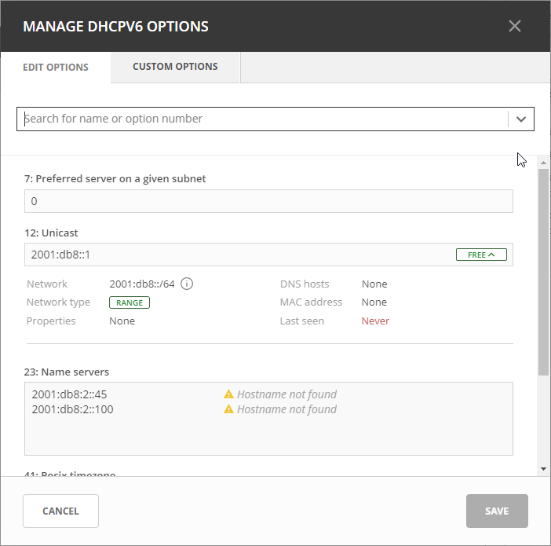
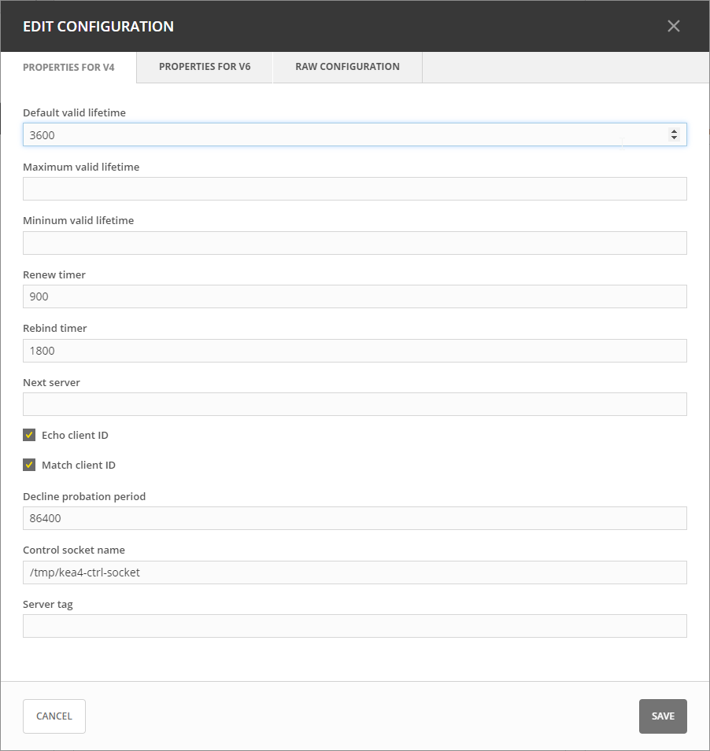
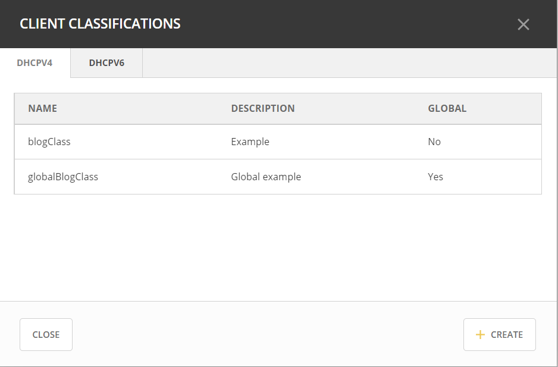
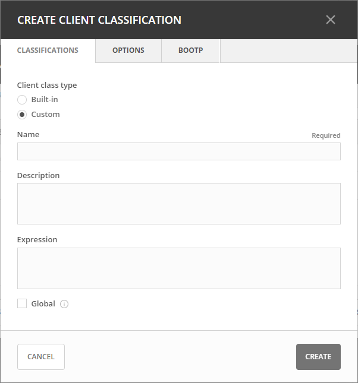
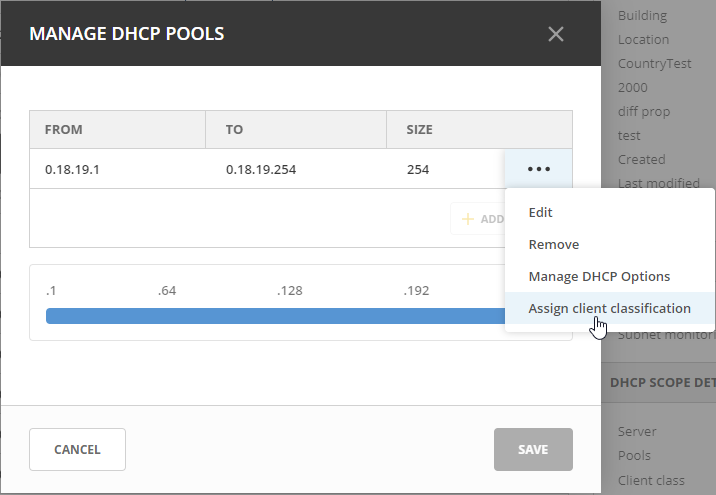
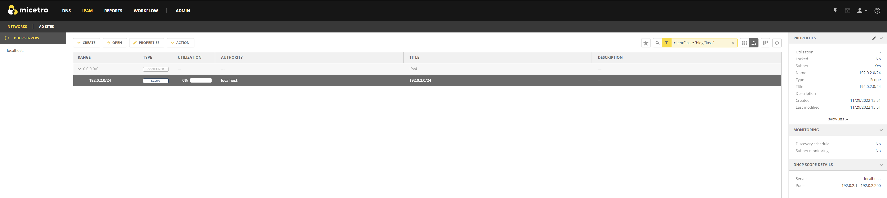

ISC Kea DHCP
Kea Control Agent
The Kea Control Agent serves as a crucial component, operating as a daemon that provides a RESTful control interface for seamless management of Kea servers. This agent can receive control commands via HTTP and can either forward them to the respective Kea servers or execute them on its own.
Note
The default port for the Kea Control Agent is 8000.
The Kea Control Agent enables you to add Kea DHCP servers to Micetro without a DHCP agent running on every machine hosting Kea. A single DHCP agent, installed on a machine with access to the Kea service instances, is sufficient and will communicate with all Kea servers on behalf of Micetro.
Adding Kea to Micetro
Because Micetro uses the Kea API to communicate with the DHCP server(s), it requires the Kea hook library libdhcp_lease_cmds.so in addition to the DHCP agent.
Note
On certain distributions such as RHEL, it’s essential to verify the installation of the kea-hooks package.
Configuring the Kea Hook Library
After installing the Kea hook library, open kea-dhcp4.conf and locate the hooks-libraries array. Add the hook to libdhcp_lease_cmds.so:
"hooks-libraries":[
{
"library" : "/lib64/kea/hooks/libdhcp_lease_cmds.so",
"parameters" : {}
}
]
The location of the libdhcp_lease_cmds.so library may vary depending on your distribution. To locate it, you can use the command whereis libdhcp_lease_cmds.so.
After adding the library, restart Kea and the Kea Control Agent.
Enabling Kea High Availability
Kea DHCP servers need to be configured for high availability before the primary server is added to Micetro. If the high availability is set up properly, once added to the system, Micetro will recognize the failover nodes and the method (load balancing, hot standby, etc.) and configure the server objects accordingly.
For more information, see Managing Failover Relationships for Kea DHCP Services.
Defining Options on Kea DHCP Servers
On the Admin page, select Service Management in the upper-left corner.
Under DHCP Services in the filtering sidebar, select the applicable Kea DHCP server.
Select Manage DHCPv4 options or Manage DHCPv6 options on either the Action or the Row … menu.
In the Manage DHCP Options dialog box, use the dropdown menu to select the option you want to define.
To delete an option, hover over its field, and then click the trash can icon next to it.
Click Save to save the updated options.
{kind=link}
Defining Custom DHCP Options
In the Manage DCHP Options dialog box, click the Custom Options tab.
Select the appropriate Vendor class in the dropdown list.
To add a new custom option, select Add Custom Option.
Enter the desired ID. An error will show if that ID is not available or invalid.
Enter a name.
Select a type in the dropdown list. Select the Array checkbox if the option is an Array.
Click Add, and then Save.
Note
Once an option has been defined, you can set its value on the Edit Options tab.
Editing an Existing Custom Option
On the Custom Options tab in the Manage DHCP Options dialog box, select the relevant custom option.
On the Row … menu, select Edit.
Edit the ID, and then click Save.
Removing an Existing Custom Option
On the Custom Options tab in the Manage DHCP Options dialog box, select the relevant custom option.
On the Row … menu, select Remove, and then Yes to confirm.
Editing Kea DHCP Server Properties
You can edit the configuration of Kea DHCP servers.
On the Admin page, select the relevant Kea server.
Select Edit configuration on either the Action or Row … menu.
In the Edit Configuration dialog box, make the desired changes, and then click Save.
Default/Maximum/Minimum Valid Lifetime: Specifies the time after which a lease will expire if not renewed.
Renew Timer: Specifies the time when a client will begin a renewal procedure.
Rebind Timer: Specifies the time when a client will begin a rebind procedure.
Next Server: Specifies the server address to use when clients want to obtain configuration from a TFTP server.
Echo Client ID: Specifies if the server should send back client-id options when responding to clients.
Match Client ID: Specifies if the server should ignore the client identifier during lease lookups and allocations for a particular subnet.
Decline Probation Period: Specifies a probation time that will be set on addresses that are in use by some unknown entity.
Control Socket Name: The path to the UNIX socket. Cannot be empty.
Server tag: An arbitrary string used to associate configuration elements with specific Kea server instances in a configuration database, allowing for shared or unique configurations among multiple servers.
{kind=link}
Raw Configuration
The v4 and v6 properties tabs are the most commonly used properties for configuring Kea DHCP services.
For more specialized configurations, you can define additional properties on the Raw Configuration tab. This allows you to edit configuration files directly on the server for both DHCPv4 and DHCPv6. Please note that when editing these files, there is minimal error handling, so caution should be taken when making changes and saving them.
Handling External Changes with Kea
Warning
You should always edit the Kea DHCP server’s configuration file through Micetro to ensure instant the synchronization between Micetro and the Kea DHCP server is instant, where any modifications made are immediately updated in the database and reflected in the user interface.
Note
All changes made to the configuration file through Micetro will automatically and instantly be propagated to the secondary/backup servers in a Kea DHCP High Availability setup.
Micetro uses the in-memory configuration of the Kea server. If external changes must be made to a Kea DHCP server’s configuration file, the changes to the configuration file aren’t processed by the server until forced to parse the file to its in-memory structure, so Micetro can be made aware of these changes.
To make the Kea DHCP server process changes to its configuration file a call has to be made to either the Kea Control Agent or the socket that Kea uses.
An example of the call to the control-agent:
curl -X POST -H "Content-Type: application/json" -d '{ "command": "config-reload", "service": [ "dhcp4" ] }' localhost:8000
If successful, the result looks like this:
[ { "result": 0, "text": "Configuration successful." } ]
After the changes to the configuration file have been accepted and parsed into the Kea DHCP servers memory structure, you can display them in Micetro through the Edit Configuration action for the server.
Resolving Conflicts
Micetro synchronizes all data between the Kea DHCP servers and its database regularly. Setting the DHCPSyncInterval variable in Central’s preferences.cfg overwrites the default value of 15 minutes.
Note
The values set for DHCPSyncInterval are in seconds.
Synchronization occurs based on the configuration to update the database and the user interface, but to prevent overwriting external changes before synchronization is complete, Micetro will check for conflicts with the Kea server’s in-memory configuration before writing the changes to the server.
For example, if a scope with subnet 1.3.3.0/29 is manually added to the Kea DHCP servers configuration file, and config-reload is successfully called, the Kea server will have parsed the change and added the scope to its in-memory data structure. Synchronization with Micetro may not have been executed yet, and the externally added scope is not yet visible in the user interface. However, if another user would try to add the same or otherwise conflicting scope through Micetro, they will receive a message stating “A scope with address “1.3.3.0” already exists on the server” as the configuration file is validated against the Kea DHCP servers in-memory config before each change is applied.
External Changes and Kea High Availability
See Making external changes to Kea servers in high availability.
Managing Kea Client Classifications with Micetro
You can manage Kea Client Classifications through Micetro.
On the Admin page, select Kea under DHCP Services in the left sidebar.
Select the relevant service, and then select Manage client classes on either the Action or the Row … menu.
If you have any client classes already defined on your server, you can find them listed on the respective service type tab (DHCPv4/DHCPv6).
From here you can create, edit existing, or remove client classes. Any of these actions will add an entry to the audit trail inside of Micetro which can be viewed by selecting the history action of a client class.
{kind=link}
Creating Client Classes
Click Create.
In the Create Client Classification dialog box, enter the necessary information.
Enter a name and create an expression. Each DHCP packet will be evaluated against the expression to determine if it should belong to that client class. For information about how to create expressions, see the Kea documentation.
Optionally you can add a description. The description is not added to the Kea config, only saved in Micetro. Defining a client class as global is a Micetro-specific feature and is explained in detail below.
Select the Global checkbox if you want to create the client clss on all active Kea servers. Any modification or removal action on that client class will be replicated on all the active Kea servers.
Go to the Options tab to set DHCP options on the client classes.
For DHCPv4 client classes, you can specify BOOTP parameters.
When you are finished, click Create.
{kind=link}
Assigning Client Classes
You can limit the access to specific scopes and address pools by assigning a client class to them. Then only packets that belong to the assigned client class will have access.
To assign a client class to a scope:
Go to the IPAM page, and select a Kea scope.
Select Assign client classification on either the Action or the Row … menu.
In the Manage DHCP Pools dialog box, select the pool.
On the Row … menu, select Assign client classification.

{kind=link}
To assign a client class to a pool:
Open a Kea scope.
Select Manage DHCP pools on either the Action menu or the Row ….
In the dropdown list, select the client class to assign to the scope. To unassign a client class, select Unassigned.
Assigning client classes to scopes/pools shows up in the history of the respective ranges. You can filter ranges based on their assigned client classes with the property clientClass.
{kind=link}